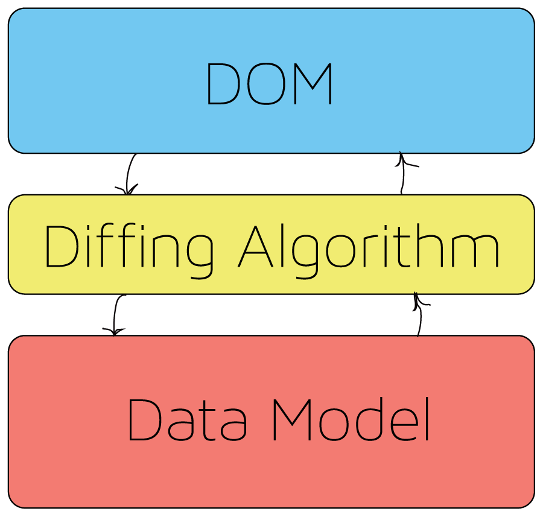
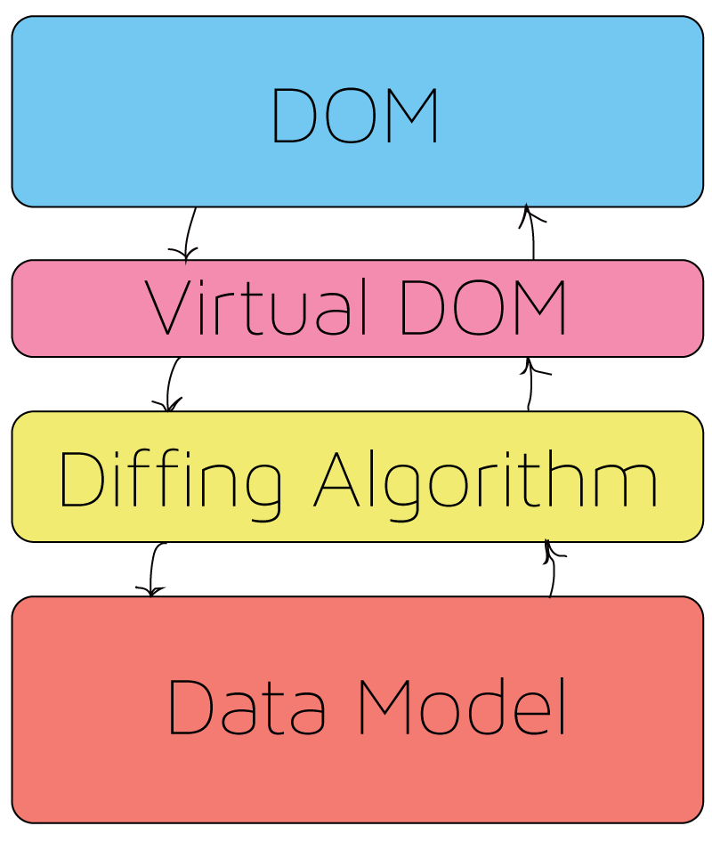
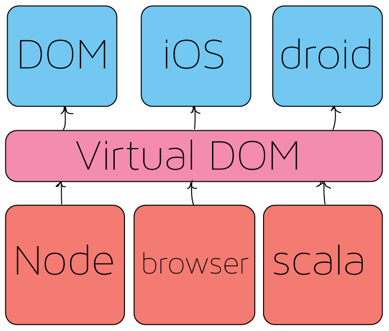

The Developer and the DOM
A history of manipulation and abstraction.
Presented by Zack Michael / Greg Noack
This DOM?

Nah, This DOM!
Who are we?
We are two developers from Squishymedia.
Zack Michael
Gregory Noack
Why are we here?
Where did javascript come from?
document.write("Hello Open Source Bridge!");
What was javascript intended for?
How did it end up in the browser?
Problem 1:
All the browsers are different
function example (code) {
return 'jQuery shims';
}
Solution: Libraries like jQuery
- provided a common API
Problem 2: Application Architecture
- How do we organize our applications?
$(document).ready(function() {
user = {};
user.isLoggedIn = fals;
function logout () {
user.isLoggedIn = false;
$('.navbar.usermenu').empty();
$('.navbar.usermenu').append('');
$('#login').click(login);
}
function login () {
user.isLoggedIn = true;
$('.navbar.usermenu').empty();
$('.navbar.usermenu').append('');
$('#logout').click(logout);
}
if (user.isLoggedIn) {
$('.navbar.usermenu').append('');
$('#logout').click(logout);
} else {
$('.navbar.usermenu').append('');
$('#login').click(login);
}
});
Solution: Early frameworks
jQuery made DOM manipulation straight forward but thinking updating the DOM piecemeal is too granular.
We want to be able to be able to focus on business logic.
Complexity increases
- Ajax everywhere
- More complex interactions
Problem 3: How to deal with increase complexity
- Single page applications
- Tons of logic on the client
- Routing
- Templating
Solution: Next generation frameworks
- Backbone
- Angular
- Ember
- Knockout
- Diffing algorithm 
- Client side router
Problem 4: Performance and Scalability
- Recent frameworks were built on server side paradigms
- They still relied on the DOM
Solution: Another wave of framework evolution
- Angular 2.0
- React
- Riot
- JSBlocks
Virtual DOM
Virtual DOM Possibilities
Language enhancements
- ECMA Script 6
- TypeScript